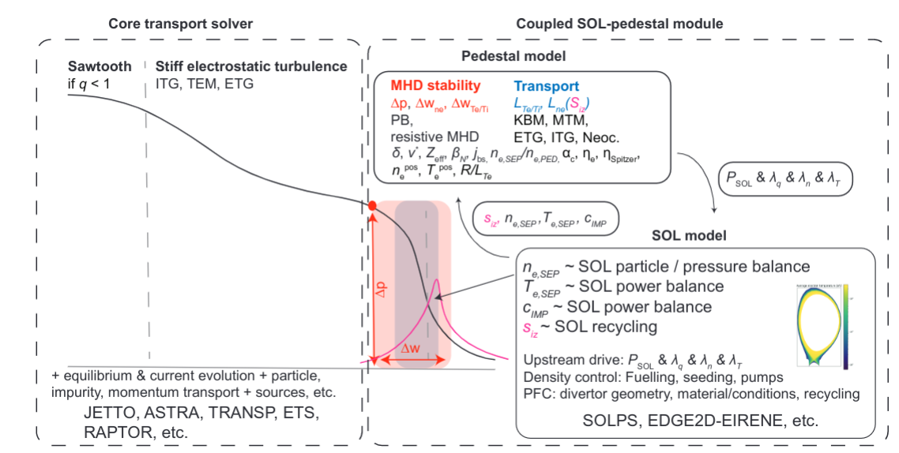
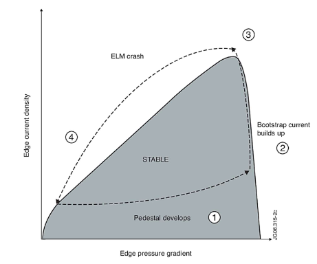
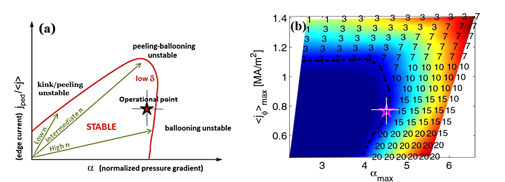

Pedestal & SOL overview

As Fig. 1 suggests, we have multiple competing processes at the interface of the core, pedestal and scrape-off-layer (SOL). Traditionally, physicists have seperated core from edge, which has a somewhat good reason behind it. In reactor-scale devices (and even those on the smaller scale), the core and edge can have vastly different collisionalities, and thus the gradient scales poloidally are very different for core than they are for the edge. At the end of the day, gradients drive both transport and instabilities.
Stability
Up to date understanding of PB stability in JET1,2,3,4.
Currently, we observe that the pedestal region can only grow so much in terms of gradients before it hits a stability boundrary Fig. 2, triggering an ELM. ELM’s are considered a ‘reactor killer’, so we need to avoid those at all cost. We can limit that growth by increasing turbulent transport from the core, but this in turn lowers core confinement (see turbulent section below).

Ideally, we would have the plasma sit at the stability boundrary Fig. 3.

The tricky business is that the boundrary is not a static thershold, as any variation in gradients/densities/temperatures will lead to non-zero changes in the boundrary. Additionally, the boundrary itself is not set by a single phenomena, but rather the leading order phenomnea that effects the gradients. There are many instabilites that effect the gradients, those that have highest order impact on the pedestal are the ideal- and resistive- MHD modes.
How do we calcualate the boundrary?
- MISHKA for ideal
- CASTOR for resistive
How do we see this in the data?
Turbulence
TBD